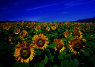
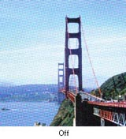
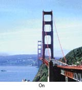

|
||
 |
||
Problemy z jakością skanowania
Krawędzie oryginału nie są skanowane
W przypadku skanowania w trybie Full Auto Mode (Tryb automatyczny) lub z wykorzystaniem podglądu miniatur w trybie Home Mode (Tryb domowy) lub Professional Mode (Tryb profesjonalny) możesz uniknąć obcięcia fragmentu dokumentu poprzez odsunięcie go około 5,1 mm (0,2 cala) z dala od górnej krawędzi oznaczonej przez a lub 5,3 mm (0,21 cala) z dala od krawędzi bocznych oznaczonych przez b na poniższym rysunku.
W przypadku skanowania z wykorzystaniem normalnego podglądu w trybie Home Mode (Tryb domowy) lub Professional Mode (Tryb profesjonalny) możesz uniknąć obcięcia fragmentu dokumentu poprzez odsunięcie go około 2,1 mm (0,08 cala) z dala od górnej krawędzi oznaczonej przez a lub 2,3 mm (0,09 cala) z dala od krawędzi bocznych oznaczonych przez b na poniższym rysunku.
Na zeskanowanym obrazie widoczne jest tylko kilka punktów
Upewnij się, że dokument lub zdjęcie zostało umieszczone na tacy dokumentów stroną do skanowania skierowaną w dół. Szczegółowe informacje zawiera rozdział Umieszczanie dokumentów lub fotografii.
W przypadku skanowania z zastosowaniem ustawienia Black&White (Czarno-biały) w trybie Home Mode (Tryb domowy) lub ustawienia Black & White w trybie Professional Mode (Tryb profesjonalny) należy zmienić ustawienie Threshold (Próg). Instrukcje zawiera rozdział Dostosowywanie kolorów i innych ustawień obrazu.
Na zeskanowanym obrazie zawsze widoczna jest linia lub linia punktów
Być może taca dokumentów lub okno przystawki do materiałów przezroczystych wymagają czyszczenia. Wyczyść tacę dokumentów. Zobacz Czyszczenie skanera.
Jeśli problem wciąż występuje, taca dokumentów lub okno przystawki do materiałów przezroczystych mogą być zarysowane. Skontaktuj się ze sprzedawcą, aby uzyskać pomoc. Zobacz Sprzedawca.
Proste linie obrazu są przekrzywione
Upewnij się, że dokument na tacy dokumentów jest ułożony prosto.
Obraz jest rozmazany
Upewnij się, że dokument lub zdjęcie na tacy dokumentów jest ułożone płasko. Upewnij się także, że dokument lub zdjęcie nie jest pomarszczone ani zawinięte.
Upewnij się, że dokument, zdjęcie lub skaner nie zostały poruszone podczas skanowania.
Upewnij się, że skaner stoi na płaskiej, stabilnej powierzchni.
Zaznacz pole wyboru Unsharp Mask (Maska wyostrzająca) w oknie Professional Mode (Tryb profesjonalny). Instrukcje zawiera rozdział Dostosowywanie kolorów i innych ustawień obrazu.
Dopasuj ustawienie Auto Exposure (Automatyczna ekspozycja) w oknie Professional Mode (Tryb profesjonalny). Instrukcje zawiera rozdział Dostosowywanie kolorów i innych ustawień obrazu.
Kliknij przycisk Configuration (Konfiguracja), wybierz kartę Color (Kolorowy) i wybierz Color Control (Ustawienie koloru) oraz Continuous auto exposure (Ciągła automatyczna ekspozycja). Szczegółowe informacje zawiera Pomoc programu Epson Scan.
Kliknij przycisk Configuration (Konfiguracja), wybierz kartę Color (Kolorowy) i kliknij opcję Recommended Value (Wartość zalecana). To spowoduje przywrócenie wartości domyślnej ustawienia Auto Exposure (Automatyczna ekspozycja). Szczegółowe informacje zawiera Pomoc programu Epson Scan.
Zwiększ wartość ustawienia Resolution (Rozdzielczość). Instrukcje zawiera rozdział Wybieranie ustawienia skanowania Resolution (Rozdzielczość).
Jeśli nie jesteś zadowolony z jakości zeskanowanych filmów po wypróbowaniu wszystkich powyższych rozwiązań, możesz wyregulować wysokość między uchwytem filmów a tacą dokumentów.
Użyj regulatora do określenia odległości między filmem i tacą dokumentów. Upewnij się, że wszystkie regulatory są ustawione na tę samą wysokość. Możesz przesunąć regulator do ich domyślnej wysokości wynoszącej 3 mm (0,12 cala), oznaczonej symbolem .

Na brzegach obrazu kolory są niejednolite lub rozmazane
Jeśli skanowany dokument jest bardzo gruby lub jego brzegi są zawinięte, przykryj brzegi papierem, aby zablokować dostęp światła z zewnątrz podczas skanowania.
Zeskanowany obraz jest zbyt ciemny

Jeśli oryginał jest zbyt ciemny, spróbuj użyć funkcji Backlight Correction (Korekcja cieni) w trybie Home Mode (Tryb domowy) lub Professional Mode (Tryb profesjonalny). Instrukcje zawiera rozdział Poprawianie podświetlenia zdjęć.
Sprawdź ustawienie Brightness (Jasność) w trybie Home Mode (Tryb domowy) lub Professional Mode (Tryb profesjonalny). Szczegółowe informacje zawiera Pomoc programu Epson Scan.
Kliknij Configuration (Konfiguracja), wybierz kartę Color (Kolorowy) i zmień ustawienie Display Gamma (Współczynnik gamma ekranu) na odpowiednie dla urządzenia wyjściowego, na przykład monitora lub drukarki. Szczegółowe informacje zawiera Pomoc programu Epson Scan.
Kliknij przycisk Configuration (Konfiguracja), wybierz kartę Color (Kolorowy) i wybierz Color Control (Ustawienie koloru) oraz Continuous auto exposure (Ciągła automatyczna ekspozycja). Szczegółowe informacje zawiera Pomoc programu Epson Scan.
Kliknij przycisk Configuration (Konfiguracja), wybierz kartę Color (Kolorowy) i kliknij opcję Recommended Value (Wartość zalecana). To spowoduje przywrócenie wartości domyślnej ustawienia Auto Exposure (Automatyczna ekspozycja). Szczegółowe informacje zawiera Pomoc programu Epson Scan.
Aby dopasować jasność, kliknij ikonę  Histogram Adjustment (Dopasowywanie histogramu) w trybie Professional Mode (Tryb profesjonalny).
Histogram Adjustment (Dopasowywanie histogramu) w trybie Professional Mode (Tryb profesjonalny).
Histogram Adjustment (Dopasowywanie histogramu) w trybie Professional Mode (Tryb profesjonalny).Sprawdź ustawienia jasności i kontrastu monitora komputera.
Na zeskanowanym obrazie widoczny jest obraz z drugiej strony oryginału
Jeśli oryginał jest wydrukowany na cienkim papierze, skaner może także zarejestrować obrazy znajdujące się z drugiej strony oryginału — w takim przypadku będą one widoczne na zeskanowanym obrazie.
Spróbuj zeskanować oryginał przykładając do jego tylnej strony arkusz czarnego papieru.
Sprawdź ustawienia oprogramowania skanującego, takie jak typ obrazu i dopasowywanie obrazu.
Można użyć funkcji Text Enhancement (Wzmocnienie tekstu).
Instrukcje zawierają rozdziały Skanowanie w trybie Home Mode (Tryb domowy) i Skanowanie w trybie Professional Mode (Tryb profesjonalny).
Instrukcje zawierają rozdziały Skanowanie w trybie Home Mode (Tryb domowy) i Skanowanie w trybie Professional Mode (Tryb profesjonalny).
Zeskanowany obraz ma pomarszczoną powierzchnię
Na zeskanowanym obrazie lub wydrukowanym dokumencie może się pojawić mora, czyli wzór przypominający pomarszczenie lub siatkę. Efekt ten jest wynikiem różnicy pomiędzy rastrem skanera a rastrem półtonów skanowanego oryginału.
|
Obraz oryginalny
|
Z zastosowaniem opcji Descreening (Usuwanie mory)
|
|
 |
 |
Zaznacz pole wyboru Descreening (Usuwanie mory) w trybie Home Mode (Tryb domowy) lub Professional Mode (Tryb profesjonalny). W trybie Professional Mode (Tryb profesjonalny) wybierz odpowiednią wartość ustawienia Screen Ruling (Liniatura rastra) w ustawieniach opcji Descreening (Usuwanie mory) i usuń zaznaczenie pozycji Unsharp Mask (Maska wyostrzająca). Instrukcje zawiera rozdział Dostosowywanie kolorów i innych ustawień obrazu.
Wybierz mniejszą rozdzielczość. Instrukcje zawiera rozdział Wybieranie ustawienia skanowania Resolution (Rozdzielczość).
 Uwaga:
Uwaga:|
Wzorów pomarszczenia nie można usunąć, jeśli skanowany jest film lub obrazy monochromatyczne albo jeśli skanowanie odbywa się w rozdzielczości wyższej niż 600 dpi.
|
Przy konwersji na tekst do edycji (OCR) znaki nie są poprawnie rozpoznawane.
Upewnij się, że dokument na tacy dokumentów jest ułożony prosto.
W trybie Home Mode (Tryb domowy) zaznacz pole wyboru Text Enhancement (Wzmocnienie tekstu).
Dopasuj ustawienie Threshold (Próg).
Tryb Home Mode (Tryb domowy): Wybierz opcję Black&White (Czarno-biały) jako ustawienie Image Type (Typ obrazu). Następnie spróbuj dopasować ustawienie opcji Threshold (Próg).
Professional Mode (Tryb profesjonalny): Kliknij przycisk + (Windows) lub (Mac OS X) obok pola Image Type (Typ obrazu) i wprowadź odpowiednie ustawienie Image Option (Opcja Obrazu). Następnie spróbuj dopasować ustawienie opcji Threshold (Próg).
Sprawdź w instrukcji obsługi oprogramowania do rozpoznawania tekstu (OCR), czy oprogramowanie oferuje ustawienia, które można dostosować.
Kolory w zeskanowanym obrazie różnią się od kolorów oryginału
Upewnij się, że ustawienie Image Type (Typ obrazu) jest prawidłowe. Instrukcje zawierają rozdziały Skanowanie w trybie Home Mode (Tryb domowy) i Skanowanie w trybie Professional Mode (Tryb profesjonalny).
Kliknij Configuration (Konfiguracja), wybierz kartę Color (Kolorowy) i zmień ustawienie Display Gamma (Współczynnik gamma ekranu) na odpowiednie dla urządzenia wyjściowego, na przykład monitora lub drukarki, w menu Color (Kolorowy). Szczegółowe informacje zawiera Pomoc programu Epson Scan.
Dopasuj ustawienie Auto Exposure (Automatyczna ekspozycja) w oknie Professional Mode (Tryb profesjonalny). Spróbuj również wybrać inne wartości ustawienia Tone Correction (Korekcja tonalna). Instrukcje zawiera rozdział Dostosowywanie kolorów i innych ustawień obrazu.
Kliknij przycisk Configuration (Konfiguracja), wybierz kartę Color (Kolorowy) i wybierz Color Control (Ustawienie koloru) oraz Continuous auto exposure (Ciągła automatyczna ekspozycja) w menu Color (Kolorowy). Szczegółowe informacje zawiera Pomoc programu Epson Scan.
Kliknij przycisk Configuration (Konfiguracja), wybierz kartę Color (Kolorowy) i kliknij opcję Recommended Value (Wartość zalecana). To spowoduje przywrócenie wartości domyślnej ustawienia Auto Exposure (Automatyczna ekspozycja). Szczegółowe informacje zawiera Pomoc programu Epson Scan.
Kliknij przycisk Configuration (Konfiguracja), wybierz kartę Preview (Podgląd) i włącz ustawienie Quality Preview (Podgląd jakości) w menu Preview (Podgląd). Szczegółowe informacje zawiera Pomoc programu Epson Scan.
Upewnij się, że ustawienie Embed ICC Profile (Osadzenie profilu ICC) jest włączone. W oknie File Save Settings (Ustawienia zapisywania plików) wybierz JPEG lub TIFF jako ustawienie Type (Typ). Kliknij Options (Opcje), a następnie zaznacz pole wyboru Embed ICC Profile (Osadzenie profilu ICC). Aby uzyskać dostęp do okna File Save Settings (Ustawienia zapisywania plików), patrz rozdział Wybór opcji w oknie File Save Settings (Ustawienia zapisywania plików).
Sprawdź możliwości dopasowywania kolorów i zarządzania kolorami na komputerze, monitorze i w oprogramowaniu. Niektóre komputery mogą zmieniać paletę kolorów wyświetlanych na ekranie. Szczegółowe informacje zawierają instrukcje obsługi oprogramowania i sprzętu.
Użyj systemu zarządzania kolorami komputera: ICM dla Windows lub ColorSync dla Macintosh. Dodaj profil kolorów odpowiadający monitorowi w celu ulepszenia dopasowania kolorów na ekranie. Dokładne dopasowanie kolorów jest bardzo trudne. Informacje na temat dopasowywania i kalibracji kolorów zawiera dokumentacja oprogramowania i monitora.
Uwaga:|
W trybie Home Mode (Tryb domowy), jeśli jako typ dokumentu wybrano opcję Illustration (Ilustracja), Magazine (Czasopismo), Newspaper (Gazeta), Text/Line Art (Tekst/Grafika liniowa), osadzony jest profil EPSON sRGB nawet wtedy, gdy wybrano inne ustawienie ICM/ColorSync.
W trybie Professional Mode (Tryb profesjonalny), jeśli w opcji Auto Exposure Type (Typ automatycznej ekspozycji) wybrano Document (Dokument), osadzony jest profil EPSON sRGB nawet wtedy, gdy wybrano inne ustawienie ICM/ColorSync.
|
Drukowane kolory nigdy nie są w pełni zgodne z tymi na monitorze, ponieważ drukarki i monitory korzystają z różnych systemów kolorów: monitory wykorzystują model RGB (czerwony, zielony i niebieski), natomiast drukarki wykorzystują model CMYK (błękitny, amarantowy, żółty i czarny).
Na zeskanowanym obrazie filmu lub slajdu widoczne są pierścienie składające się z kresek
Wzór pasków w kształcie pierścienia (o nazwie pierścień Newtona) pojawia się czasami na obrazach skanowanych z materiałów przezroczystych. Zjawisko to może występować, jeśli film jest zawinięty.
Umieść film lub slajdy na skanerze spodnią stroną skierowaną do góry i użyj wartości podglądu miniatur. Następnie obróć wyświetlany obraz, klikając przycisk odbicia lustrzanego  w oknie Preview (Podgląd). Instrukcje zawiera rozdział Dostosowywanie kolorów i innych ustawień obrazu.
w oknie Preview (Podgląd). Instrukcje zawiera rozdział Dostosowywanie kolorów i innych ustawień obrazu.
w oknie Preview (Podgląd). Instrukcje zawiera rozdział Dostosowywanie kolorów i innych ustawień obrazu.Obrazy są obrócone nieprawidłowo
Upewnij się, że dokumenty lub zdjęcia są prawidłowo położone na tacy dokumentów. Instrukcje zawiera rozdział Umieszczanie dokumentów lub fotografii.
Upewnij się, że film lub slajdy są poprawnie włożone do uchwytu filmu oraz że uchwyt jest właściwie ułożony na tacy dokumentów. Instrukcje zawiera rozdział Umieszczanie filmów lub slajdów.
W przypadku skanowania z wykorzystaniem podglądu miniatur w trybie Home Mode (Tryb domowy) lub Professional Mode (Tryb profesjonalny) wybierz obraz i kliknij ikonę obrotu  , aby go obrócić. Instrukcje zawiera rozdział Wyświetlanie podglądu i dostosowywanie obszaru skanowania.
, aby go obrócić. Instrukcje zawiera rozdział Wyświetlanie podglądu i dostosowywanie obszaru skanowania.
, aby go obrócić. Instrukcje zawiera rozdział Wyświetlanie podglądu i dostosowywanie obszaru skanowania.Spróbuj wyłączyć lub włączyć ustawienie Auto Photo Orientation (Automatyczna orientacja zdjęcia).
Full Auto Mode (Tryb automatyczny): Kliknij przycisk Customize (Dostosuj), a następnie zaznacz lub odznacz opcję Auto Photo Orientation (Automatyczna orientacja zdjęcia).
Home Mode (Tryb domowy) lub Professional Mode (Tryb profesjonalny): Kliknij przycisk Configuration (Konfiguracja), wybierz zakładkę Preview (Podgląd) i zaznacz lub odznacz opcję Auto Photo Orientation (Automatyczna orientacja zdjęcia).
Uwaga:|
Funkcja Auto Photo Orientation (Automatyczna orientacja zdjęcia) nie działa w przypadku skanowania stron gazet lub czasopism, dokumentów, ilustracji lub grafiki liniowej. Ta funkcja działa również podczas skanowania obrazów, których dowolny z boków jest równy 5,1 cm lub krótszy.
Funkcja Auto Photo Orientation (Automatyczna orientacja zdjęcia) może działać nieprawidłowo, jeśli twarze widoczne na obrazie są bardzo małe, nie są zwrócone na wprost, albo jeśli są to twarze niemowląt. Działanie tej funkcji może być także nieprawidłowe w przypadku skanowania obrazu wnętrza, na którym nie są widoczne twarze, obrazu przedstawiającego krajobraz, na którym niebo nie znajduje się w górnej części obrazu lub obrazów zawierających jasne miejsca albo obiekty poza górnym obszarem obrazu.
|
Tekstura dokumentu nie jest zeskanowana na obrazie
Wybierz pole wyboru Show Texture (Pokaż teksturę) z menu Other (Inne) w oknie dialogowym Configuration (Konfiguracja).
Uwaga:|
Wybranie opcji Show Texture (Pokaż teksturę) wydłuża czas skanowania.
W przypadku zaznaczenia pola wyboru Show Texture (Pokaż teksturę) po wyświetleniu podglądu, wyświetl podgląd ponownie, aby sprawdzić efekt funkcji Show Texture (Pokaż teksturę).
Funkcja Show Texture (Pokaż teksturę) nie jest dostępna w trybie Full Auto mode (Tryb automatyczny).
Funkcja Show Texture (Pokaż teksturę) jest niedostępna w przypadku skanowania filmów.
Funkcja DIGITAL ICE Technology (Digital ICE Technology) jest niedostępna, jeśli zaznaczone jest pole wyboru Show Texture (Pokaż teksturę) i jeśli wybrano nieprzezroczysty dokument jako wartość parametru Document Type (Typ dokumentu).
Zaznaczenie pola Show Texture (Pokaż teksturę) jest usuwane po ponownym uruchomieniu programu Epson Scan.
|